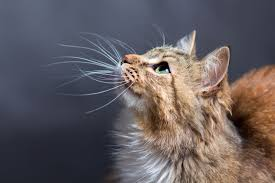

here are some cat pictures

They are small, furry animals known for their playful and curious nature. Cats have sharp claws and teeth, which they use for hunting and climbing. They are very clean animals and groom themselves by licking their fur. Cats are independent but enjoy spending time with their owners.